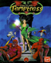
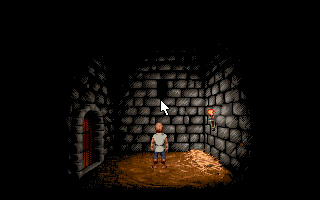
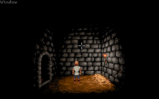
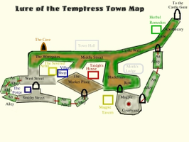

Lure
Dieser Artikel wurde für die folgenden Ubuntu-Versionen getestet:
Ubuntu 14.04 Trusty Tahr
Zum Verständnis dieses Artikels sind folgende Seiten hilfreich:
 Nach Jahrzehnten der Unruhen hatte der König seine streitsüchtigen Untertanen vereinigt - er herrschte wieder Frieden im Königreich. Unter seiner gerechten Herrschaft, geschützt durch das Meer und die Berge, kam es zu großem Wohlstand unter seiner Bevölkerung. Die Felder brachten gute Ernten ein - und jeder ging sorglos seinem Leben nach. Der König und sein Geleit hatten unserem Dorf während seiner Jagden einen Besuch abgestattet und ich, Diermot, freute mich, denn ich würde die Möglichkeit haben, mir über ein paar Tage gutes Geld als Treiber zu verdienen. Ich hätte es wissen sollen, dass etwas nicht stimmte, als der Bote ins Dorf kam...
|  |  |
| DOSBox | ScummVM |
In der fernen Stadt Turnvale hatte es einen Aufstand gegeben, man sprach von einer wunderschönen, jungen Zauberin namens Selena - es hörte sich alles schrecklich aufregend an, doch auch sehr gefährlich! Ich sattelte mein Pferd und beeilte mich, ungesehen davonzuschlüpfen, doch hatte das dumme Tier die ansteigende Aufregung gespürt, es half alles nichts. Bevor ich wusste, wie mir geschah, ritt ich mit der Garde des Königs! Als die kalte Morgendämmerung heranbrach, waren wir der Stadt Turnvale schon nahe. Durch den morgendlichen Nebel konnten wir das Geschrei und Geklirr der näherkommenden Armee hören, doch erst als die fernen Schatten Gestalt annahmen, erkannten wir, dass Selena eine Horde unmenschlicher Wesen um sich versammelt hatte. Es war meine erste Begegnung mit den Skorl. Auf einem kleinen Hügel über der Stadt Turnvale fiel der König und wurde dort von den wenigen seiner Begleiter, die die Schlacht überlebt hatten, begraben. Die Stadt konnte nicht mehr gerettet werden und ergab sich der Armee Selenas und der Skorl. Während des Kampfes hatte mich mein Pferd aus Angst und Schrecken abgeworfen, worauf ich mein Bewusstsein verlor. Als ich wieder zu mir kam, fand ich mich als Gefangener in den Verließen von Turndale wieder. Dies ist meine Geschichte...
Installation¶
DOSBox¶
Um Lure of the Temptress spielen zu können, geht man wie folgt vor:
Herunterladen und entpacken [3] des Spiels von ScummVM.org

 oder sourceforge.net
oder sourceforge.net Die Datei Lure.exe mit DOSBox [1] starten.
Hinweis:
Mit dem Cursor auf das Menü an der Oberseite des Bildschirmes gehen und das Spiel erneut starten. Dieses Vorgehen überbrückt das Kopierschutzsystem und beugt einem Bug in der PC/DOS-Version des Spiels vor, der es verhindert das Spiel zu beenden. Außerdem fehlen Informationen zu den Vitalwerten.
|  |
| Karte |
Kopierschutz¶
In der deutschen Version des Spiels sind noch zusätzliche Dateien enthalten:
Lure.pdf - Handbuch zum Spiel
PROTECT.PDF - Kopierschutz
Hinweis:
Durch einen Bug kann die Freeware-Version des Spiels nicht beendet werden. Um das Problem zu umgehen muss man das Spiel direkt nach dem Start über "Restart Game" erneut starten.

Infobox¶
| Lure of the Temptress | |
| Genre: | Adventure |
| Sprache: |     |
| Veröffentlichung: | 1992 |
| Publisher: | Virgin Interactive Entertainment |
| Systemvoraussetzungen: | 286 10MHz, 640 KB RAM, 5 MB Festplattenplatz, EGA/VGA Grafikkarte, Soundkarte |
| Medien: | CD (1) / Diskette (1) |
| Strichcode / EAN / GTIN: | 5028587050244 |
| Läuft mit: | DOSBox und ScummVM |
{kind=link}
- Erstellt mit Inyoka
-
 2004 – 2017 ubuntuusers.de • Einige Rechte vorbehalten
2004 – 2017 ubuntuusers.de • Einige Rechte vorbehalten
Lizenz • Kontakt • Datenschutz • Impressum • Serverstatus -
Serverhousing gespendet von